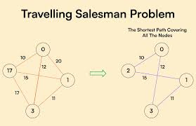
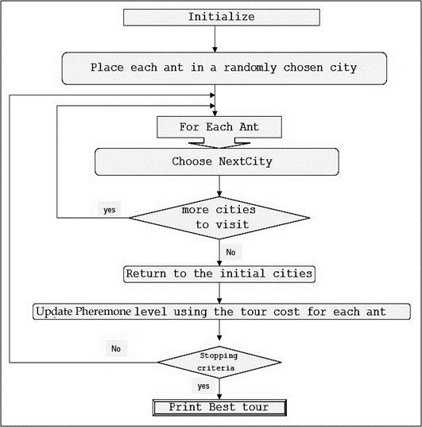

<!DOCTYPE html>
<html lang="en">
<head>
  <meta charset="UTF-8" />
  <meta name="viewport" content="width=device-width, initial-scale=1.0"/>
  <title>Salesforce | CRM</title>
  <link rel="stylesheet" href="https://cdnjs.cloudflare.com/ajax/libs/font-awesome/6.5.0/css/all.min.css">
<link rel="stylesheet" href="style1.css" />
</head>
<body>
  <div class="layout">
    <aside class="sidebar">
      <h2><i class="fas fa-cloud"></i> Salesforce Use Cases</h2>
      <ul>
        <li><a href="#intro">Introduction</a></li>
        <li><a href="#performance">Performance </a></li>
        <li><a href="#code">Code</a></li>
        <li><a href="#complexity">Time and Space Complexity</a></li>
        <li><a href="#ref">References</a></li>
      </ul>
    </aside>

    <main class="main">
      <h1 class="header">Field Service Management</h1>
<!--       <p class="subtitle">Utilizes efficient data structures to synchronize customer interactions and transactional records across systems in near real-time. Hash Maps and Queues provide fast access and order-preserving mechanisms to manage high-throughput CRM operations.</p> -->

      <div class="card" id="intro">
        <h3>Business Case</h3>
      <p>Field Service Management (FSM) optimizes the dispatch and routing of technicians to various service locations, where the problem of minimizing total travel time is modeled as a Travelling Salesman Problem (TSP). Ant Colony Optimization (ACO), inspired by ant foraging behavior, is used in FSM to find near-optimal routing solutions by simulating multiple possible paths and reinforcing the best ones through pheromone updates.</p>
      </div>
      <div class="card" id="performance">
        
          
      <p><strong>Challenges:</strong> Route explosion, Real-time recalculation.</p>
      <p><strong>Market Benefits:</strong> Optimal technician routing, improved customer satisfaction, dynamic adjustments.</p>
      <h4>Algorithm, Design Techniques, Performance Analysis:</h4>
      <ul>
        <li><strong>Data Structure used:</strong> Ant Colony Optimization (ACO) – a probabilistic technique inspired by the behavior of real ants finding the shortest paths using pheromone trails to solve travelling salesman Problem.</li>
        <li><strong>Design Approach:</strong> Divide-and-conquer, recursive tree manipulation.</li>
        <li><strong>Time Complexity:</strong> Per iteration (per ant): O(n²); Total: O(k × m × n²) where, k: number of iterations, m: number of ants, n: number of cities/tasks</li>
        <li><strong>Space Complexity:</strong> O(n²) for: Distance matrix, Pheromone matrix, O(m × n) for all tours</li>
      </ul>
    </div>

      <div class="card" id ="code"> 
        <h3>Code</h3>
        <div class="code-block">
<pre>
#include <iostream>
#include <vector>
#include <cmath>
#include <cstdlib>
#include <ctime>
#include <limits>
#include <algorithm>

using namespace std;

const int NUM_CITIES = 5;
const int NUM_ANTS = 10;
const int MAX_ITER = 100;
const double ALPHA = 1.0;       // pheromone importance
const double BETA = 5.0;        // distance importance
const double RHO = 0.5;         // evaporation rate
const double Q = 100.0;         // pheromone deposit factor

double dist[NUM_CITIES][NUM_CITIES];     // distance between cities
double pheromone[NUM_CITIES][NUM_CITIES]; // pheromone levels

vector<int> bestTour;
double bestTourLength = numeric_limits<double>::max();

// Euclidean distance between 2D points
double distance(pair<int, int> a, pair<int, int> b) {
    return sqrt(pow(a.first - b.first, 2) + pow(a.second - b.second, 2));
}

// Initialize distance and pheromone matrices
void initializeGraph(vector<pair<int, int>>& cities) {
    for (int i = 0; i < NUM_CITIES; ++i) {
        for (int j = 0; j < NUM_CITIES; ++j) {
            if (i != j)
                dist[i][j] = distance(cities[i], cities[j]);
            else
                dist[i][j] = 1e9; // big value to avoid self-loops

            pheromone[i][j] = 1.0;
        }
    }
}

// Choose next city based on probability
int selectNextCity(int current, vector<bool>& visited) {
    double sum = 0.0;
    vector<double> probs(NUM_CITIES, 0.0);

    for (int i = 0; i < NUM_CITIES; ++i) {
        if (!visited[i]) {
            probs[i] = pow(pheromone[current][i], ALPHA) * pow(1.0 / dist[current][i], BETA);
            sum += probs[i];
        }
    }

    double r = (double)rand() / RAND_MAX * sum;
    double cumulative = 0.0;
    for (int i = 0; i < NUM_CITIES; ++i) {
        if (!visited[i]) {
            cumulative += probs[i];
            if (cumulative >= r)
                return i;
        }
    }

    // Fallback
    for (int i = 0; i < NUM_CITIES; ++i) {
        if (!visited[i]) return i;
    }

    return -1; // should not reach
}

// Simulate ant colony for given iterations
void antColonyOptimization() {
    for (int iter = 0; iter < MAX_ITER; ++iter) {
        vector<vector<int>> allTours(NUM_ANTS);
        vector<double> tourLengths(NUM_ANTS, 0.0);

        // Each ant builds a tour
        for (int ant = 0; ant < NUM_ANTS; ++ant) {
            vector<bool> visited(NUM_CITIES, false);
            int start = rand() % NUM_CITIES;
            visited[start] = true;
            allTours[ant].push_back(start);

            int current = start;

            for (int step = 1; step < NUM_CITIES; ++step) {
                int next = selectNextCity(current, visited);
                allTours[ant].push_back(next);
                visited[next] = true;
                tourLengths[ant] += dist[current][next];
                current = next;
            }

            // return to start
            tourLengths[ant] += dist[current][start];
            allTours[ant].push_back(start);

            // Update best
            if (tourLengths[ant] < bestTourLength) {
                bestTourLength = tourLengths[ant];
                bestTour = allTours[ant];
            }
        }

        // Evaporate pheromones
        for (int i = 0; i < NUM_CITIES; ++i)
            for (int j = 0; j < NUM_CITIES; ++j)
                pheromone[i][j] *= (1 - RHO);

        // Deposit pheromones
        for (int ant = 0; ant < NUM_ANTS; ++ant) {
            for (int i = 0; i < NUM_CITIES; ++i) {
                int from = allTours[ant][i];
                int to = allTours[ant][i + 1];
                pheromone[from][to] += Q / tourLengths[ant];
                pheromone[to][from] += Q / tourLengths[ant];
            }
        }
    }
}

// Driver
int main() {
    srand(time(0));

    // Sample cities (x, y)
    vector<pair<int, int>> cities = {
        {0, 0}, {2, 3}, {5, 4}, {6, 1}, {3, 0}
    };

    initializeGraph(cities);
    antColonyOptimization();

    cout << "Best tour length: " << bestTourLength << endl;
    cout << "Best tour: ";
    for (int city : bestTour)
        cout << city << " ";
    cout << endl;

    return 0;
}
</pre>
        </div>
      </div>

      <div class="card" id ="complexity">
        <h3>⏱️ Time And Space Complexity</h3>
          <table>
    <thead>
      <tr>
        <th>Operation</th>
        <th>Average Time Complexity</th>
        <th>Worst-Case Time Complexity</th>
        <th>Space Complexity</th>
      </tr>
    </thead>
    <tbody>
      <tr>
        <td>Build KD-Tree</td>
        <td>O(n log n)</td>
        <td>O(n log n)</td>
        <td>O(n)</td>
      </tr>
      <tr>
        <td>Nearest Neighbor Search</td>
        <td>O(log n) (balanced tree)</td>
        <td>O(n) (skewed or unbalanced tree)</td>
        <td>O(log n) recursion stack</td>
      </tr>
      <tr>
        <td>Insert/Delete Node</td>
        <td>O(log n) (no balancing)</td>
        <td>O(n) (worst case, no balancing)</td>
        <td>O(1) per operation</td>
      </tr>
    </tbody>
  </table>
      </div>

      <div class="card references" id="ref">
        <h3>📚 References</h3>
        <ul>
          <li>https://en.wikipedia.org/wiki/Ant_colony_optimization_algorithms</li>
          <li>https://www.researchgate.net/figure/Flowchart-of-ACO-algorithm-for-TSP-Samaiya-Samaiya-2012_fig3_318014104</li>
        </ul>
      </div>

      <div class="nav-footer">
        <a href="16.html">Next: Mergers and Acquisition Integration →</a>
      </div>
    </main>
  </div>
</body>
</html>
